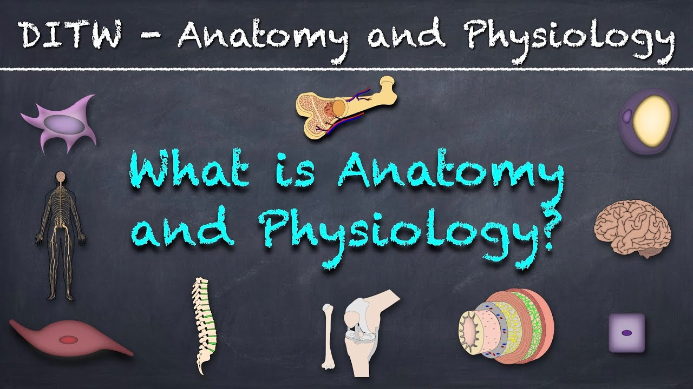
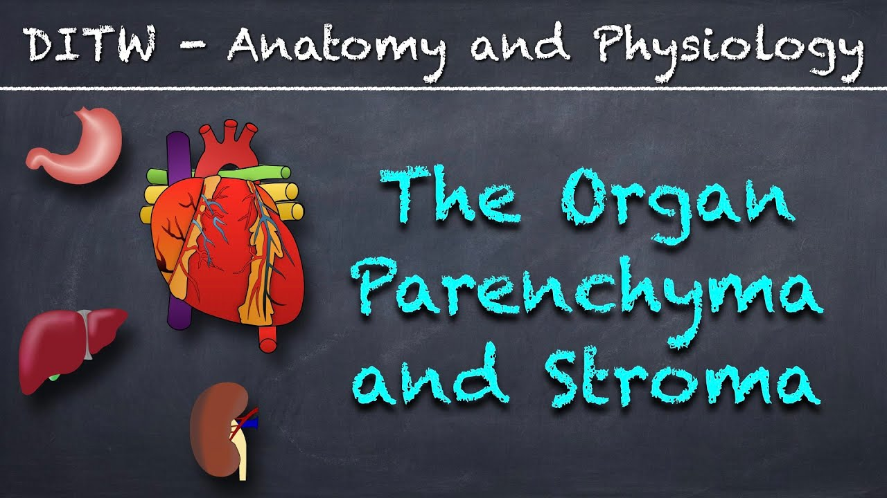
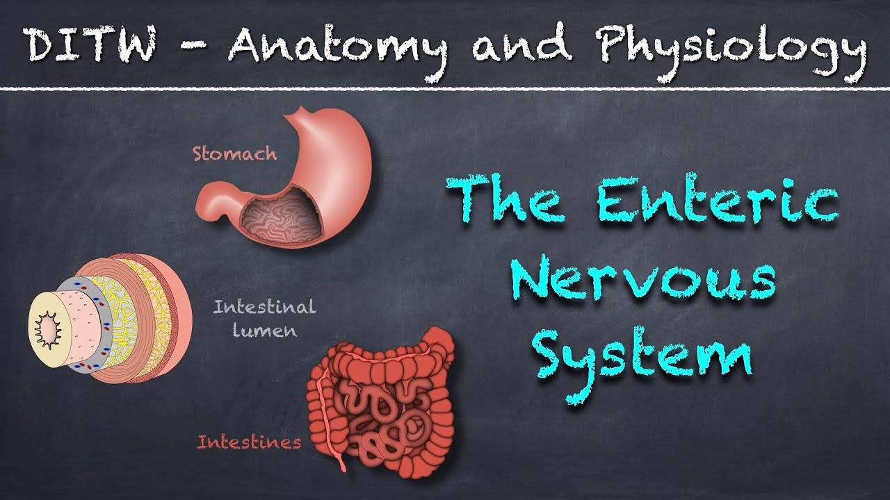
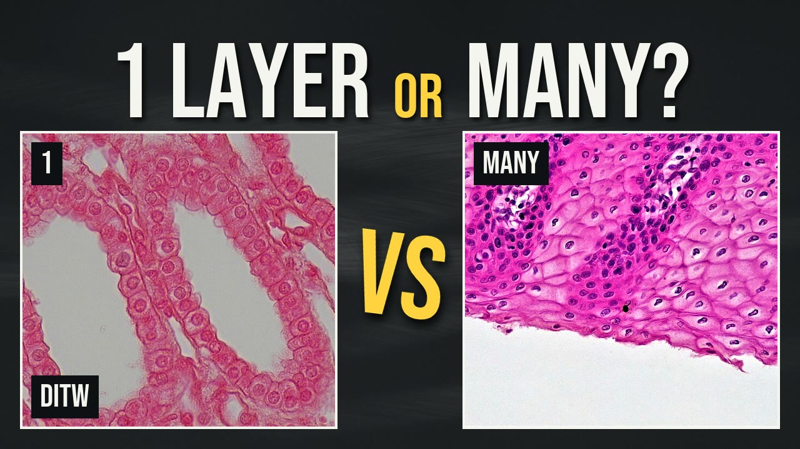

DITW is my anatomy and physiology channel on YouTube. I've made short, plain lessons for nursing and health students since 2017, and I still do.
View counts from YouTube, October 19, 2026.
Comments left on YouTube, quoted as written, without names. Each one links to the lesson it was left on.
“Einstein said: "If you can't explain it simply, you don't understand it well enough." This video explains it simply.”
YouTube comment on The Organ Parenchyma and Stroma
“Super concise and precise. From a fellow lecturer.”
YouTube comment on The Organ Parenchyma and Stroma
“Really clear explanation. Thank you!”
YouTube comment on Microvilli versus Cilia
“Two terms that show up randomly in medical lectures but never really get explained. Thank you sir, for this contribution.”
YouTube comment on The Organ Parenchyma and Stroma
“This video helped me a lot and thank you !!!”
YouTube comment on Simple Squamous Epithelial Tissue
“excellent why cant our teacher teach like this”
YouTube comment on The Organ Parenchyma and Stroma
The most-watched lessons, then what the channel looks like now.

What is Anatomy and Physiology?
2020 · Writer, Animator, Editor, Narrator
The channel's most-watched lesson, built on one simple idea: anatomy is structure, physiology is function. Over 124,000 views and 2,000 likes.

The Organ Parenchyma and Stroma
2017 · Writer, Animator, Editor, Narrator
The working tissue of an organ versus its support tissue, in under two minutes. Over 49,000 views, and the most comments on the channel.

The Enteric Nervous System
2020 · Writer, Animator, Editor, Narrator
How the gut's own nervous system regulates digestion independent of the brain. Over 46,000 views.

Simple vs Stratified Epithelium
2026 · Made with AI help, narrated by me
The channel's current style: a seven-minute lesson with real microscope images and a three-step method for identifying any slide.
Glucagon: How Your Body Raises Blood Sugar
2026 · Recut from a 2020 lesson
An older lesson recut for phones, with captions and key terms on screen. About 27 seconds.
Each lesson covers one topic and stands on its own.
I wrote, animated, and edited the older videos myself. For newer ones, I use AI to help draft, fact-check, and build each lesson, then I review every line and record the narration myself.